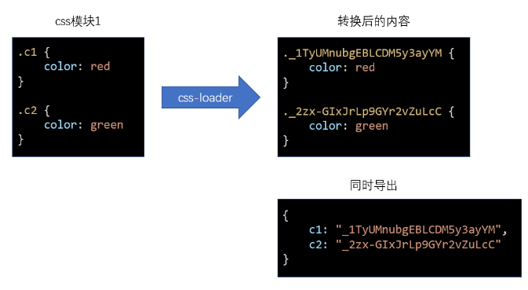
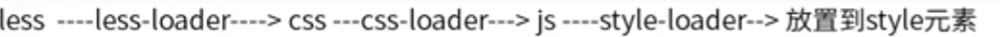
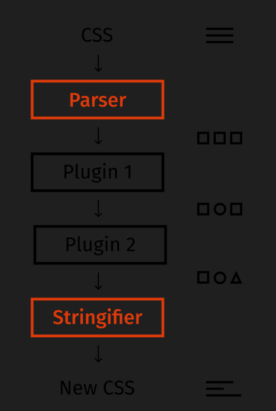
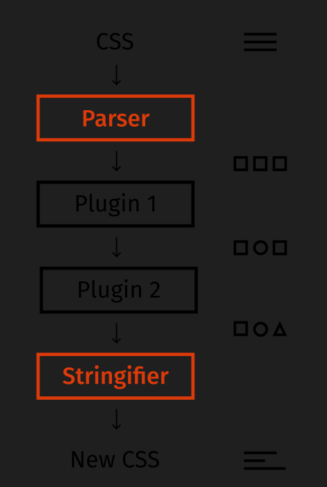

css 的问题与解决（总）
问题
类名冲突的问题
当你写一个 css 类的时候，你是写全局的类呢，还是写多个层级选择后的类呢？
你会发现，怎么都不好
- 过深的层级不利于编写、阅读、压缩、复用
- 过浅的层级容易导致类名冲突
一旦样式多起来，这个问题就会变得越发严重，其实归根结底，就是类名冲突不好解决的问题
重复样式值
这种问题就更普遍了，一些重复的样式值总是不断的出现在 css 代码中，维护起来极其困难
比如，一个网站的颜色一般就那么几种：
- primary
- info
- warn
- error
- success
如果有更多的颜色，都是从这些色调中自然变化得来，可以想象，这些颜色会到处充斥到诸如背景、文字、边框中，一旦要做颜色调整，是一个非常大的工程
css 文件细分问题
在大型项目中，css 也需要更细的拆分，这样有利于 css 代码的维护。
比如，有一个做轮播图的模块，它不仅需要依赖 js 功能，还需要依赖 css 样式，既然依赖的 js 功能仅关心轮播图，那 css 样式也应该仅关心轮播图，由此类推，不同的功能依赖不同的 css 样式、公共样式可以单独抽离，这样就形成了不同于过去的 css 文件结构：文件更多、拆分的更细
而同时，在真实的运行环境下，我们却希望文件越少越好，这种情况和 JS 遇到的情况是一致的
因此，对于 css，也需要工程化管理
从另一个角度来说，css 的工程化会遇到更多的挑战，因为 css 不像 JS，它的语法本身经过这么多年并没有发生多少的变化（css3 也仅仅是多了一些属性而已），对于 css 语法本身的改变也是一个工程化的课题
如何解决
解决类名冲突
一些第三方机构提出了一些方案来解决该问题，常见的解决方案如下：
命名约定
即提供一种命名的标准，来解决冲突，常见的标准有：
- BEM
- OOCSS
- AMCSS
- SMACSS
- 其他
css in js
这种方案非常大胆，它觉得，css 语言本身几乎无可救药了，干脆直接用 js 对象来表示样式，然后把样式直接应用到元素的 style 中
这样一来，css 变成了一个一个的对象，就可以完全利用到 js 语言的优势，你可以：
- 通过一个函数返回一个样式对象
- 把公共的样式提取到公共模块中返回
- 应用 js 的各种特性操作对象，比如：混合、提取、拆分
- 更多的花样
这种方案在手机端的 React Native 中大行其道
css module
非常有趣和好用的 css 模块化方案，编写简单，绝对不重名
具体的课程中详细介绍
解决重复样式值的问题
css in js
这种方案虽然可以利用 js 语言解决重复样式值的问题，但由于太过激进，很多习惯写 css 的开发者编写起来并不是很适应
预编译器
有些第三方搞出一套 css 语言的进化版来解决这个问题，它支持变量、函数等高级语法，然后经过编译器将其编译成为正常的 css
这种方案特别像构建工具，不过它仅针对 css
常见的预编译器支持的语言有：
- less
- sass
解决 css 文件细分问题
依靠构建工具，例如 webpack 来解决了
利用一些 loader 或 plugin 来打包、合并、压缩 css 文件
BEM（解决 css 命名冲突问题）
BEM 全称是：Block Element Modifier 三个部分的具体含义为：
- Block：页面中的大区域，表示最顶级的划分，例如：轮播图(
banner)、布局(layout)、文章(article)等等 - element：区域中的组成部分，例如：轮播图中的横幅图片(
banner__img)、轮播图中的容器（banner__container）、布局中的头部(layout__header)、文章中的标题(article_title) - modifier：可选。通常表示状态，例如：处于展开状态的布局左边栏（
layout__left_expand）、处于选中状态的轮播图小圆点(banner__dot_selected)
在某些大型工程中，如果使用 BEM 命名法，还可能会增加一个前缀，来表示类名的用途，常见的前缀有：
- l: layout，表示这个样式是用于布局的
- c: component，表示这个样式是一个组件，即一个功能区域
- u: util，表示这个样式是一个通用的、工具性质的样式
- j: javascript，表示这个样式没有实际意义，是专门提供给 js 获取元素使用的
他是一种写 css 的方式，这种方式简单来说就是语义化，不存在嵌套关系
他是一种公司统一要求的一种规范
css in js（解决 css 命名冲突问题）
css in js 的核心思想是：用一个 JS 对象来描述样式，而不是 css 样式表
例如下面的对象就是一个用于描述样式的对象：
const styles = {
backgroundColor: "#f40",
color: "#fff",
width: "400px",
height: "500px",
margin: "0 auto",
};
由于这种描述样式的方式根本就不存在类名，自然不会有类名冲突
至于如何把样式应用到界面上，不是它所关心的事情，你可以用任何技术、任何框架、任何方式将它应用到界面。
后续学习的 vue、react 都支持 css in js，可以非常轻松的应用到界面
手机端应用会遇到
css in js 的特点：
- 绝无冲突的可能：由于它根本不存在类名，所以绝不可能出现类名冲突
- 更加灵活：可以充分利用 JS 语言灵活的特点，用各种招式来处理样式
- 应用面更广：只要支持 js 语言，就可以支持 css in js，因此，在一些用 JS 语言开发移动端应用的时候非常好用，因为移动端应用很有可能并不支持 css
- 书写不便：书写样式，特别是公共样式的时候，处理起来不是很方便
- 在页面中增加了大量冗余内容：在页面中处理 css in js 时，往往是将样式加入到元素的 style 属性中，会大量增加元素的内联样式，并且可能会有大量重复，不易阅读最终的页面代码
css module（解决 css 命名冲突问题）
css module 遵循以下思路解决类名冲突问题：
- css 的类名冲突往往发生在大型项目中
- 大型项目往往会使用构建工具（webpack 等）搭建工程
- 构建工具允许将 css 样式切分为更加精细的模块
- 同 JS 的变量一样，每个 css 模块文件中难以出现冲突的类名，冲突的类名往往发生在不同的 css 模块文件中
- 只需要保证构建工具在合并样式代码后不会出现类名冲突即可
实现原理
在 webpack 中，作为处理 css 的 css-loader，它实现了 css module 的思想，要启用 css module，需要将 css-loader 的配置modules设置为true。
css-loader 的实现方式如下：

原理极其简单，开启了 css module 后，css-loader 会将样式中的类名进行转换，转换为一个唯一的 hash 值。
由于 hash 值是根据模块路径和类名生成的，因此，不同的 css 模块，哪怕具有相同的类名，转换后的 hash 值也不一样。

在 css-loader 中开启模块化配置
module.exports = {
module: {
rules: [
{
test: /\.css$/,
use: [
"style-loader",
{
loader: "css-loader",
options: {
modules: true,
},
},
],
},
],
},
};
如何应用样式
css module 带来了一个新的问题：源代码的类名和最终生成的类名是不一样的，而开发者只知道自己写的源代码中的类名，并不知道最终的类名是什么，那如何应用类名到元素上呢？
为了解决这个问题，css-loader 会导出原类名和最终类名的对应关系，该关系是通过一个对象描述的


这样一来，我们就可以在 js 代码中获取到 css 模块导出的结果，从而应用类名了
style-loader 为了我们更加方便的应用类名，会去除掉其他信息，仅暴露对应关系
通过 js 来应用样式
import style1 from "./assets/style1.css";
const div1 = document.getElementById("div1");
div1.className = style1.c1;
其他操作
全局类名
某些类名是全局的、静态的，不需要进行转换，仅需要在类名位置使用一个特殊的语法即可：
:global(.main) {
...;
}
使用了 global 的类名不会进行转换，相反的，没有使用 global 的类名，表示默认使用了 local
:local(.main) {
...;
}
使用了 local 的类名表示局部类名，是可能会造成冲突的类名，会被 css module 进行转换
如何控制最终的类名
绝大部分情况下，我们都不需要控制最终的类名，因为控制它没有任何意义
如果一定要控制最终的类名，需要配置 css-loader 的localIdentName
其他注意事项
- css module 往往配合构建工具使用
- css module 仅处理顶级类名，尽量不要书写嵌套的类名，也没有这个必要
- css module 仅处理类名，不处理其他选择器
- css module 还会处理 id 选择器，不过任何时候都没有使用 id 选择器的理由
- 使用了 css module 后，只要能做到让类名望文知意即可，不需要遵守其他任何的命名规范
使用 less（预编译器）
module.exports = {
module: {
rules: [
{ test: /\.css$/, use: ["style-loader", "css-loader"] },
{
test: /\.less$/,
use: ["style-loader", "css-loader?modules", "less-loader"],
},
],
},
};
注意：less 可以与 css module 联用
less 先通过 less-loader 变成一个普通的 css 代码，然后再通过 css-loader 把代码变成 js,然后通过 style-loader 把 css 样式的 js 代码放入 html 的 style 标签中

PostCss
postcss 对标 babel
我们写的 js 代码(怎么爽怎么来) –> babel –> 将最新的 ts 语法进行转换 js 语法 –> 做一次语法降级 –> 浏览器客户端去执行
babel –> 帮助我们让 js 执行起来万无一失
先通过 less 进行编译，比如解开嵌套，变量等，然后再交给 postcss 处理，postcss 是后处理器
我们写的 css 代码(怎么爽怎么来) –> postcss —> less –> 再次对未来的高级 css 语法进行降级 –> 前缀补全 –> 浏览器客户端
目前来说 less 和 sass 等一系列预处理器的 postcss 插件已经停止维护了 less 插件 你自己去用 less 和 sass 编译完了, 然后你把编译结果给我
所以业内就产生了一个新的说法: postcss 是后处理器，less 的 postcss 的插件
学习到现在，可以看出，CSS 工程化面临着诸多问题，而解决这些问题的方案多种多样。
如果把 CSS 单独拎出来看，光是样式本身，就有很多事情要处理。
既然有这么多事情要处理，何不把这些事情集中到一起统一处理呢？
PostCss 就是基于这样的理念出现的。
PostCss 类似于一个编译器，可以将样式源码编译成最终的 CSS 代码

看上去是不是和 LESS、SASS 一样呢？
但 PostCss 和 LESS、SASS 的思路不同，它其实只做一些代码分析之类的事情，将分析的结果交给插件，具体的代码转换操作是插件去完成的。
官方的一张图更能说明 postcss 的处理流程：
 

这一点有点像 webpack，webpack 本身仅做依赖分析、抽象语法树分析，其他的操作是靠插件和加载器完成的。
官网地址：https://postcss.org/
github 地址：https://github.com/postcss/postcss
安装
PostCss 是基于 node 编写的，因此可以使用 npm 安装
npm i -D postcss
postcss 库提供了对应的 js api 用于转换代码，如果你想使用 postcss 的一些高级功能，或者想开发 postcss 插件，就要 api 使用 postcss，api 的文档地址是：http://api.postcss.org/
不过绝大部分时候，我们都是使用者，并不希望使用代码的方式来使用 PostCss
因此，我们可以再安装一个 postcss-cli，通过命令行来完成编译
npm i -D postcss-cli
postcss-cli 提供一个命令，它调用 postcss 中的 api 来完成编译
命令的使用方式为：
postcss 源码文件 -o 输出文件
配置文件
和 webpack 类似，postcss 有自己的配置文件，该配置文件会影响 postcss 的某些编译行为。
配置文件的默认名称是：postcss.config.js
例如：
module.exports = {
map: false, //关闭source-map
};
插件
光使用 postcss 是没有多少意义的，要让它真正的发挥作用，需要插件
postcss 的插件市场：https://www.postcss.parts/
下面罗列一些 postcss 的常用插件
postcss-preset-env
过去使用 postcss 的时候，往往会使用大量的插件，它们各自解决一些问题
这样导致的结果是安装插件、配置插件都特别的繁琐
于是出现了这么一个插件postcss-preset-env，它称之为postcss预设环境，大意就是它整合了很多的常用插件到一起，并帮你完成了基本的配置，你只需要安装它一个插件，就相当于安装了很多插件了。
安装好该插件后，在 postcss 配置中加入下面的配置
module.exports = {
plugins: {
"postcss-preset-env": {}, // {} 中可以填写插件的配置
},
};
该插件的功能很多，下面一一介绍
自动的厂商前缀
某些新的 css 样式需要在旧版本浏览器中使用厂商前缀方可实现
例如
::placeholder {
color: red;
}
该功能在不同的旧版本浏览器中需要书写为
::-webkit-input-placeholder {
color: red;
}
::-moz-placeholder {
color: red;
}
:-ms-input-placeholder {
color: red;
}
::-ms-input-placeholder {
color: red;
}
::placeholder {
color: red;
}
要完成这件事情，需要使用autoprefixer库。
而postcss-preset-env内部包含了该库，自动有了该功能。
如果需要调整兼容的浏览器范围，可以通过下面的方式进行配置
方式 1：在 postcss-preset-env 的配置中加入 browsers
module.exports = {
plugins: {
"postcss-preset-env": {
browsers: ["last 2 version", "> 1%"],
},
},
};
方式 2【推荐】：添加 .browserslistrc 文件
创建文件.browserslistrc，填写配置内容
last 2 version
> 1%
方式 3【推荐】：在 package.json 的配置中加入 browserslist
"browserslist": [
"last 2 version",
"> 1%"
]
browserslist是一个多行的（数组形式的）标准字符串。
它的书写规范多而繁琐，详情见：https://github.com/browserslist/browserslist
一般情况下，大部分网站都使用下面的格式进行书写
last 2 version
> 1% in CN
not ie <= 8
last 2 version: 浏览器的兼容最近期的两个版本> 1% in CN: 匹配中国大于 1%的人使用的浏览器，in CN可省略not ie <= 8: 排除掉版本号小于等于 8 的 IE 浏览器
默认情况下，匹配的结果求的是并集
你可以通过网站：https://browserl.ist/ 对配置结果覆盖的浏览器进行查询，查询时，多行之间使用英文逗号分割
browserlist 的数据来自于CanIUse网站，由于数据并非实时的，所以不会特别准确
未来的 CSS 语法
CSS 的某些前沿语法正在制定过程中，没有形成真正的标准，如果希望使用这部分语法，为了浏览器兼容性，需要进行编译
过去，完成该语法编译的是cssnext库，不过有了postcss-preset-env后，它自动包含了该功能。
你可以通过postcss-preset-env的stage配置，告知postcss-preset-env需要对哪个阶段的 css 语法进行兼容处理，它的默认值为 2
"postcss-preset-env": {
stage: 0
}
一共有 5 个阶段可配置：
- Stage 0: Aspirational - 只是一个早期草案，极其不稳定
- Stage 1: Experimental - 仍然极其不稳定，但是提议已被 W3C 公认
- Stage 2: Allowable - 虽然还是不稳定，但已经可以使用了
- Stage 3: Embraced - 比较稳定，可能将来会发生一些小的变化，它即将成为最终的标准
- Stage 4: Standardized - 所有主流浏览器都应该支持的 W3C 标准
了解了以上知识后，接下来了解一下未来的 css 语法，尽管某些语法仍处于非常早期的阶段，但是有该插件存在，编译后仍然可以被浏览器识别
变量
未来的 css 语法是天然支持变量的
在:root{}中定义常用变量，使用--前缀命名变量
:root {
--lightColor: #ddd;
--darkColor: #333;
}
a {
color: var(--lightColor);
background: var(--darkColor);
}
编译后，仍然可以看到原语法，因为某些新语法的存在并不会影响浏览器的渲染，尽管浏览器可能不认识
如果不希望在结果中看到新语法，可以配置postcss-preset-env的preserve为false
自定义选择器
@custom-selector :--heading h1, h2, h3, h4, h5, h6;
@custom-selector :--enter :focus, :hover;
a:--enter {
color: #f40;
}
:--heading {
font-weight: bold;
}
:--heading.active {
font-weight: bold;
}
编译后
a:focus,
a:hover {
color: #f40;
}
h1,
h2,
h3,
h4,
h5,
h6 {
font-weight: bold;
}
h1.active,
h2.active,
h3.active,
h4.active,
h5.active,
h6.active {
font-weight: bold;
}
嵌套
与 LESS 相同，只不过嵌套的选择器前必须使用符号&
.a {
color: red;
& .b {
color: green;
}
& > .b {
color: blue;
}
&:hover {
color: #000;
}
}
编译后
.a {
color: red;
}
.a .b {
color: green;
}
.a > .b {
color: blue;
}
.a:hover {
color: #000;
}
postcss-apply
该插件可以支持在 css 中书写属性集
类似于 LESS 中的混入，可以利用 CSS 的新语法定义一个 CSS 代码片段，然后在需要的时候应用它
:root {
--center: {
position: absolute;
left: 50%;
top: 50%;
transform: translate(-50%, -50%);
}
}
.item {
@apply --center;
}
编译后
.item {
position: absolute;
left: 50%;
top: 50%;
-webkit-transform: translate(-50%, -50%);
transform: translate(-50%, -50%);
}
实际上，该功能也属于 cssnext，不知为何
postcss-preset-env没有支持
postcss-color-function
该插件支持在源码中使用一些颜色函数
body {
/* 使用颜色#aabbcc，不做任何处理，等同于直接书写 #aabbcc */
color: color(#aabbcc);
/* 将颜色#aabbcc透明度设置为90% */
color: color(#aabbcc a(90%));
/* 将颜色#aabbcc的红色部分设置为90% */
color: color(#aabbcc red(90%));
/* 将颜色#aabbcc调亮50%（更加趋近于白色），类似于less中的lighten函数 */
color: color(#aabbcc tint(50%));
/* 将颜色#aabbcc调暗50%（更加趋近于黑色），类似于less中的darken函数 */
color: color(#aabbcc shade(50%));
}
编译后
body {
/* 使用颜色#aabbcc，不做任何处理，等同于直接书写 #aabbcc */
color: rgb(170, 187, 204);
/* 将颜色#aabbcc透明度设置为90% */
color: rgba(170, 187, 204, 0.9);
/* 将颜色#aabbcc的红色部分设置为90% */
color: rgb(230, 187, 204);
/* 将颜色#aabbcc调亮50%（更加趋近于白色），类似于less中的lighten函数 */
color: rgb(213, 221, 230);
/* 将颜色#aabbcc调暗50%（更加趋近于黑色），类似于less中的darken函数 */
color: rgb(85, 94, 102);
}
[扩展]postcss-import
该插件可以让你在postcss文件中导入其他样式代码，通过该插件可以将它们合并
由于后续的课程中，会将 postcss 加入到 webpack 中，而 webpack 本身具有依赖分析的功能，所以该插件的实际意义不大
stylelint
在实际的开发中，我们可能会错误的或不规范的书写一些 css 代码，stylelint 插件会即时的发现错误
由于不同的公司可能使用不同的 CSS 书写规范，stylelint 为了保持灵活，它本身并没有提供具体的规则验证
你需要安装或自行编写规则验证方案
通常，我们会安装stylelint-config-standard库来提供标准的 CSS 规则判定
安装好后，我们需要告诉 stylelint 使用该库来进行规则验证
告知的方式有多种，比较常见的是使用文件.stylelintrc
//.styleintrc
{
"extends": "stylelint-config-standard"
}
此时，如果你的代码出现不规范的地方，编译时将会报出错误
body {
background: #f4;
}

发生了两处错误：
- 缩进应该只有两个空格
- 十六进制的颜色值不正确
如果某些规则并非你所期望的，可以在配置中进行设置
{
"extends": "stylelint-config-standard",
"rules": {
"indentation": null
}
}
设置为null可以禁用该规则，或者设置为 4，表示一个缩进有 4 个空格。具体的设置需要参见 stylelint 文档：https://stylelint.io/
但是这种错误报告需要在编译时才会发生，如果我希望在编写代码时就自动在编辑器里报错呢？
既然想在编辑器里达到该功能，那么就要在编辑器里做文章
安装 vscode 的插件stylelint即可，它会读取你工程中的配置文件，按照配置进行实时报错
实际上，如果你拥有了
stylelint插件，可以不需要在 postcss 中使用该插件了